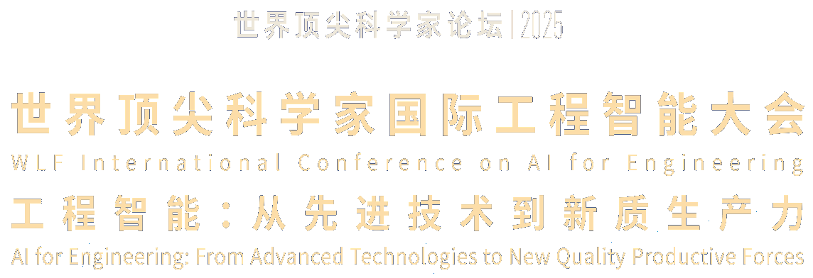

2026
投稿开始
征稿启动
WORLD LAUREATES FORUM
世界顶尖科学家论坛
2026 国际工程智能大会
面向工程智能研究与应用，征集 Workshop 论文， 入选论文将以 Poster 形式进行线上与现场展示交流。
IMPORTANT DATES
从投稿到展示交流
2026
征稿启动
2026
提交论文及展示用 Poster
2026
通知入选论文
2026
线上与现场展示交流
2026
颁发奖项及证书
投稿开始时间：2026年9月12日；投稿截止时间：2026年10月15日23:59（北京时间，UTC+8）；入选通知发布日期：2026年10月20日。
01 / Workshop call for papers
征集工程智能相关论文，入选论文以 Poster 形式展示。
诚邀高校、科研机构及产业界的研究人员与团队投稿，围绕人工智能与工程领域的融合，分享研究方法、技术进展与应用实践。
征集方向包括以下五个方面：
10月30—31日，入选论文的 Poster 将在线上与现场同步展示；未到场作者的 Poster 由主办方代为打印上墙。
02 / Acceptance & awards
论文奖项由来自多所高校及企业界的受邀专家线上评选，10月31日现场颁发。
10.15 → 10.20
10月15日线上投稿截止，10月20日发布入选通知。所有入选论文将于10月30—31日以 Poster 形式展示，并获得入选证书。
展示：10.30–31 / 颁奖：10.31
10月30—31日，Poster 线上与现场同步展示，现场作者在场讲解，未到场作者由主办方代为打印上墙。论文奖项由来自多所高校及企业界的受邀专家线上评选，于10月31日颁发奖项与证书。
最佳论文奖
最佳论文提名奖
所有入选论文均可获得
03 / Conference program
以下为拟定安排，演讲嘉宾暂拟，具体场地、报告题目及圆桌议题待确认。以下时间均为北京时间（UTC+8）。
主持人介绍 Poster 征集情况与展示安排；领导简短致辞（可选）。
Poster 线上与现场同步展示，现场作者在场讲解；未到场作者由主办方代为打印上墙。
活动总结。
Poster 将于10月30—31日在线上与现场同步展示，其中集中交流安排在10月30日14:00–16:30，10月31日继续展示。论文奖项由来自多所高校及企业界的受邀专家线上评选，10月31日举行颁奖，具体时段待公布。
主持开场5分钟，开幕致辞10分钟（致辞领导待定）。
敬请期待
Yurii Nesterov 尤里·涅斯捷罗夫（暂拟）
吴枫（暂拟）
王坚（暂拟）
张亚勤（暂拟）
张建锋（暂拟）
Matthew Rosseinsky 马修·罗塞因斯基（暂拟）
拟由华先胜院士主持；国内嘉宾：乔宇、查正军、唐金辉、马万经；国外嘉宾：Jack Dongarra、Noga Alon。主持人、嘉宾及议题将在筹备期间确认。
活动总结、合影留念。
10月31日继续展示 Poster，并颁发论文奖项与证书，具体颁奖时段待公布。仅颁发证书，无奖金，可视需要加奖杯。
ABOUT THE CONFERENCE
2026国际工程智能大会是世界顶尖科学家论坛的下辖分会，由上海世界顶尖科学家发展基金会统筹举办。
国际工程智能大会汇聚学术界与产业界，交流人工智能在工程领域的研究进展与实践经验，推动跨学科合作。
2025年大会于上海临港举行，围绕“工程智能：从先进技术到新质生产力”展开交流，并发布《工程智能白皮书》。
阅读同济大学2025大会报道
ORGANIZATION